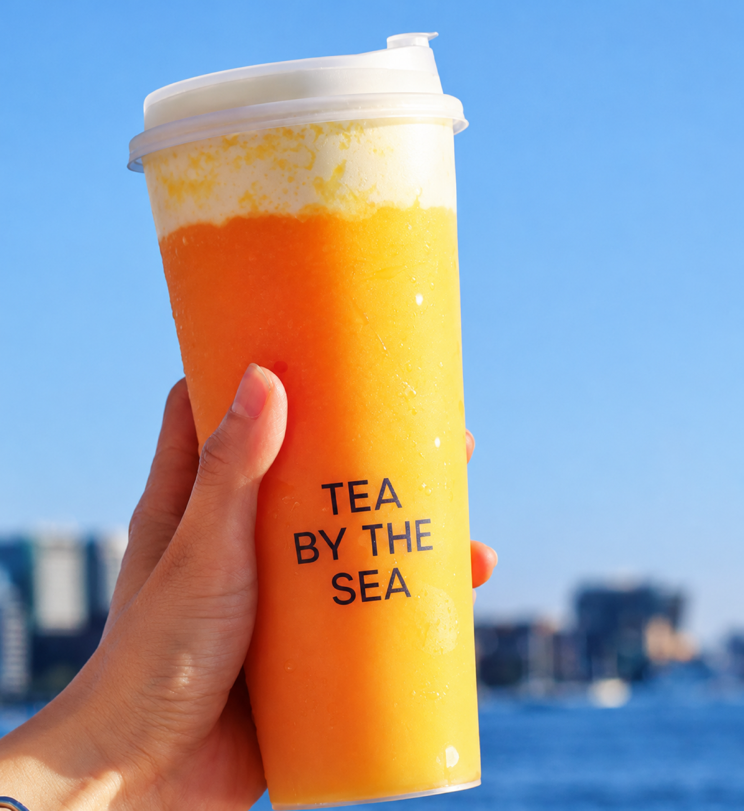
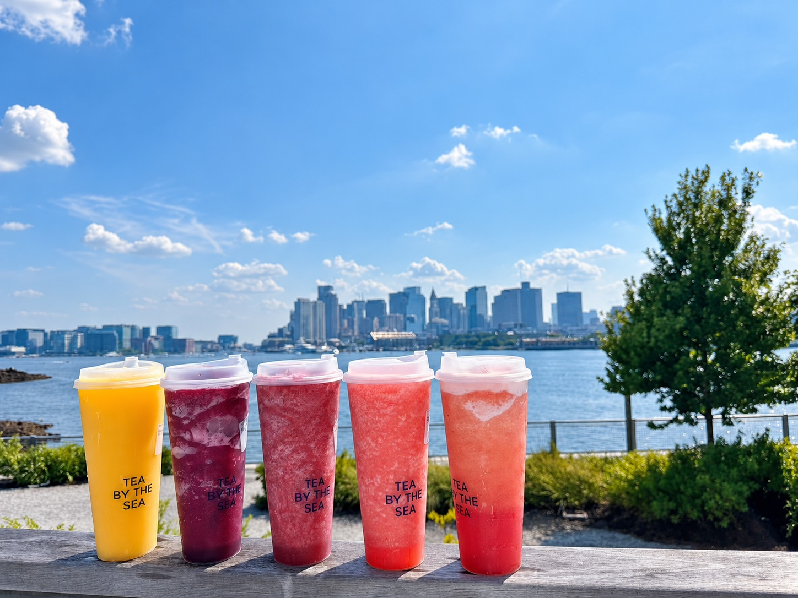
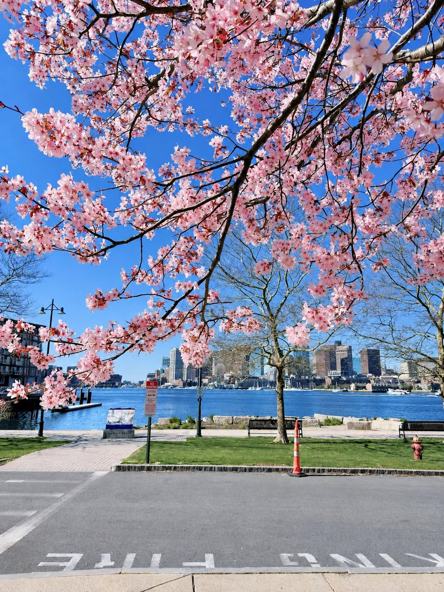
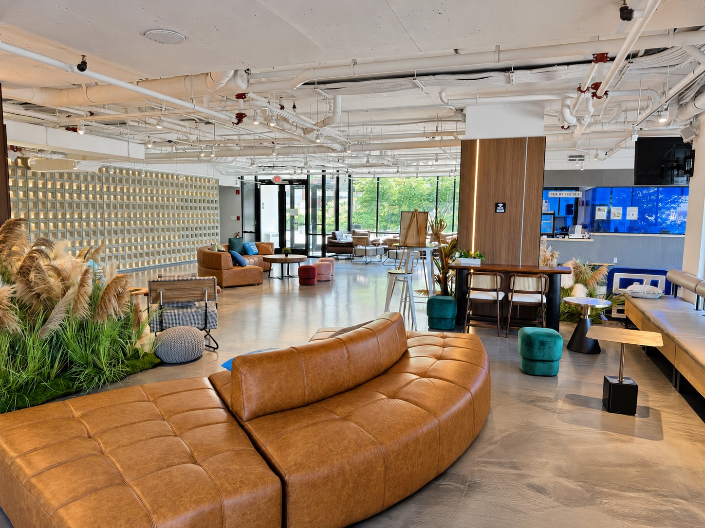
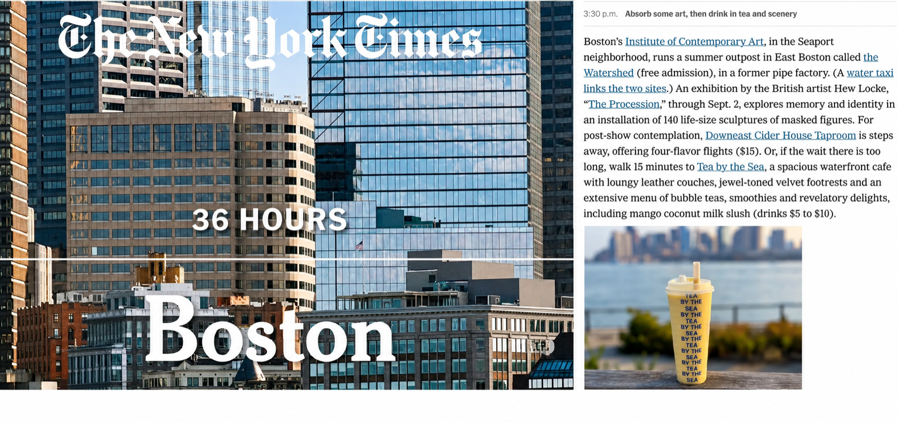
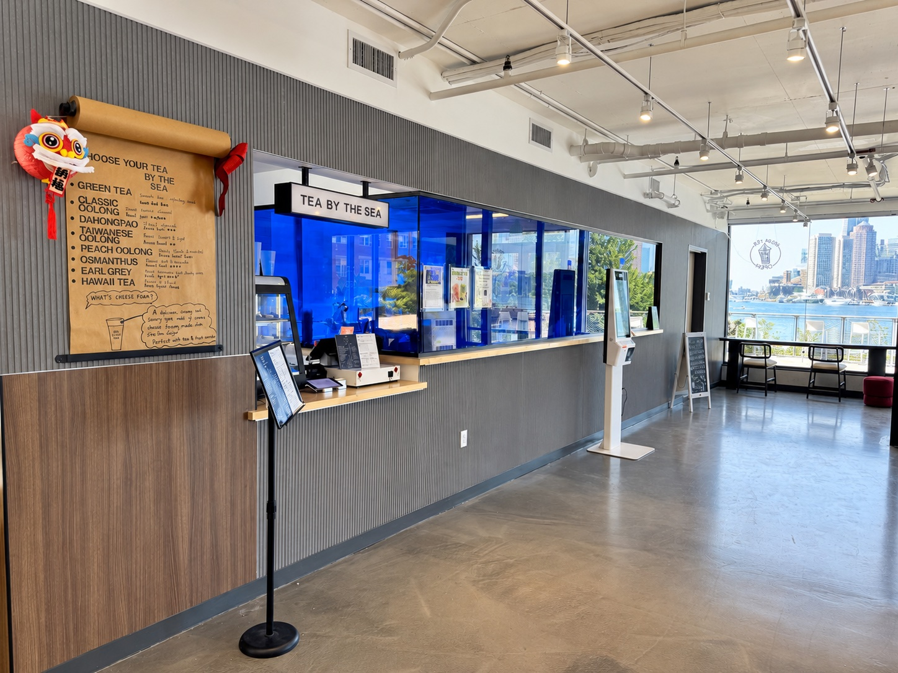

Tea by the sea,
Boston across the water.
海边喝杯茶，
对岸是波士顿。
Freshly brewed loose-leaf tea, fresh-cut fruit and a deck facing the whole downtown skyline. Right on the East Boston waterfront. 现泡原叶茶、现切鲜果，还有一整面波士顿天际线的海景露台。就在东波士顿海边。

Start with the tea一切从茶底开始
Eight loose-leaf teas from across East Asia, picked after many rounds of tasting and brewed fresh every day. Every drink on the menu is built on one of them. 八款原叶茶，来自东亚各产区，经过多轮试饮挑选，每天现泡。菜单上每一杯都从其中一款开始。
- Flavor notes香气
- Roast焙火程度
- Fermentation发酵程度
What people order大家都在点
Full menu & prices完整菜单和价格Sugar and ice are adjustable on every drink, and most come warm or hot too. 每杯都能调甜度和冰量，大部分饮品也可以做温的或热的。
A front‑row seat to the skyline坐在天际线的第一排
Our lounge and patio sit right on the harbor, facing downtown Boston. Come for a drink, stay for the sunset. The waterfront patio is open all year, and of course there are seasonal drinks. 店里的休息区和户外露台就在港湾边，正对波士顿市中心。来喝一杯，顺便看个日落。海边露台全年开放，当然还有季节限定饮品。
Tea By The Sea was founded by people from tea-drinking families and cultures. Whether you've had a hundred bubble teas or this is your first, we hope there's something here for you. Tea By The Sea 的创始人来自喝茶长大的家庭。无论你是奶茶老手（希望这里能有一点家的感觉）还是第一次尝试，都希望你能在这里找到喜欢的那一杯。



Recommended by The New York Times《纽约时报》推荐
Featured in “36 Hours in Boston” as a stop on the East Boston waterfront. 入选《纽约时报》“波士顿 36 小时”东波士顿海滨推荐。
Like us? Leave a review on喜欢的话，欢迎在这里留个评价： Google, Yelp, Tripadvisor


Host your thing here来这里办活动
Birthdays, indoor competitions, meetups, alumni reunions, small workshops or just a big group of friends. Our space comes with harbor views and a drink for everyone. 生日会、室内比赛、社团聚会、校友重聚、小型工作坊，或者只是一大群朋友聚一聚。空间自带海景，饮品管够。
We cater, too.也承接饮品外送订餐（Catering）。
Email us about your event发邮件咨询场地